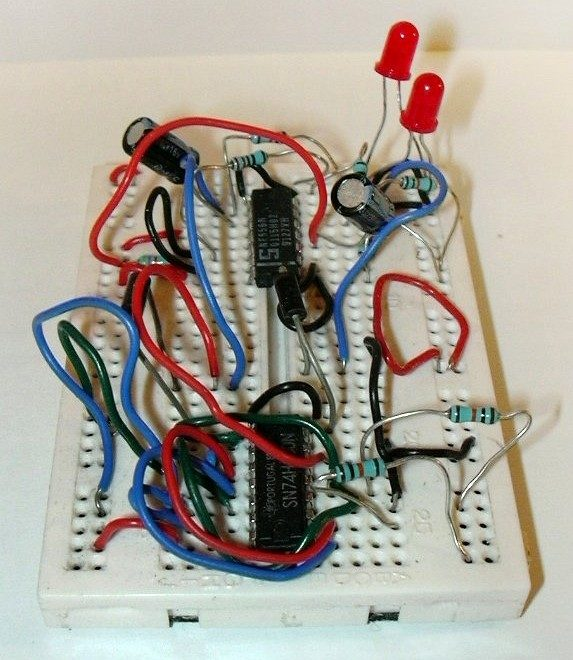
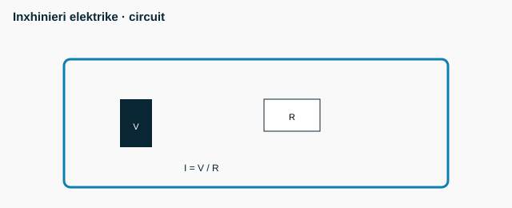

<h1>Inxhinieri elektrike - Senior - M1 — Sinjalet</h1>
<figure class="photo"></figure>


<ul>
<li>Periudha T = 1/f</li>
<li>V_rms (sinusoidale) = V_pik/√2</li>
<li>Nyquist: f_s &gt; 2·f_max</li>
<li>dB (tension) = 20·log₁₀(V₂/V₁)</li>
<li data-aoi="kritike" data-critical="true">Spektri: çdo sinjal periodik = shumë sinusoidesh (Fourier)</li>
</ul>

